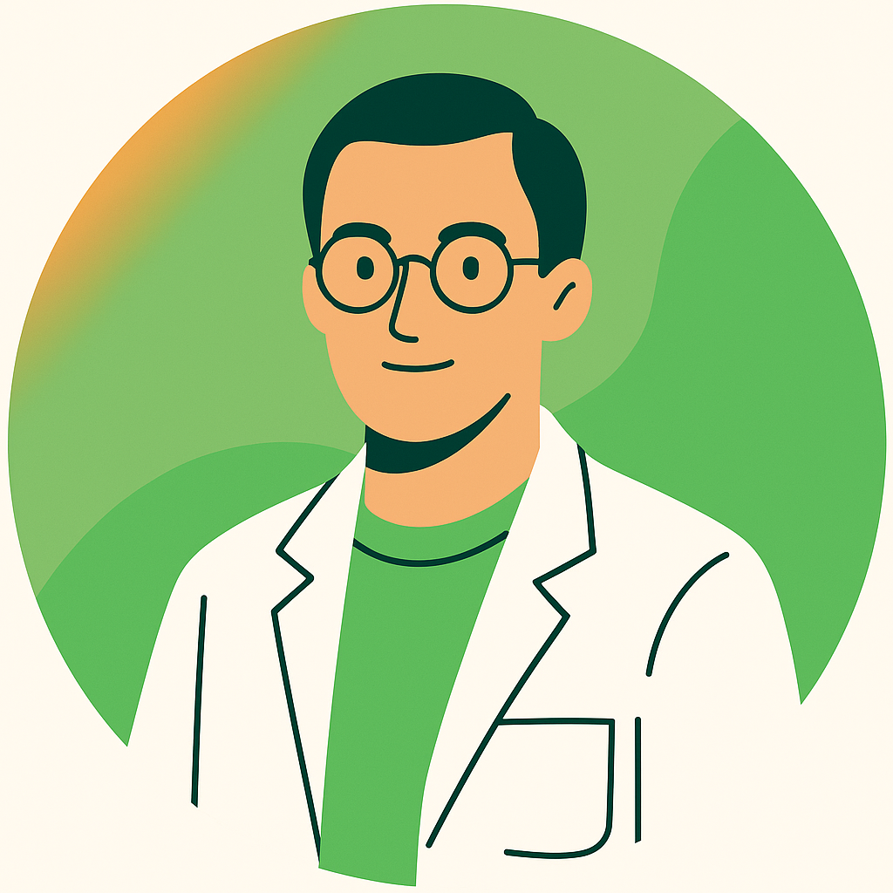

Brno University of Technology (BUT), founded in 1899, is one of the Czech Republic’s leading technical and research universities with a strong international reputation. Located in Brno, a vibrant Central European student city, BUT today comprises eight faculties and three university institutes offering high-quality education in engineering, natural sciences, economics, arts, and related disciplines to nearly 18000 students. The university emphasizes excellence in both teaching and research, engaging in basic, applied, and contract research through its own research centers and major infrastructures. BUT supports extensive international cooperation, with numerous partnerships and participation in global networks such as EULiST, CESAER, and EUA, and actively promotes mobility for students and staff. It is recognized in world rankings, including the QS World University Rankings and THE World University Rankings, and holds the “HR Excellence in Research” award. BUT also focuses on sustainability, entrepreneurship, and creating a safe and inclusive academic environment, preparing graduates well aligned with industry needs and global challenges. The Central European Institute of Technology at BUT (CEITEC-BUT) is engaged in cutting-edge research on additive manufacturing, including advanced 3D printing methods such as robocasting, with applications ranging from biomedical implants to industrial and space technology. CEITEC-BUT also bridges fundamental research and practical implementation in sustainable and high-performance production.

Edgar B. Montufar is a Senior Researcher at CEITEC, Brno University of Technology (Czech Republic). He holds a PhD in Biomedical Engineering (Technical University of Catalonia) and an MSc in Materials Science and Engineering (National University of Mexico). His research focuses on additive manufacturing of porous ceramic/metal structures and ceramic–metal composites for medical applications. He has co-authored 70+ papers and leads international projects, including coordinating the Erasmus+ Edu-GArD3n and the EIC Pathfinder Open BiCeps projects.

Carolina is a scientist specializing in biomaterials and additive manufacturing for medical applications. She obtained her doctoral degree in Health Sciences in 2020 from the Autonomous University of the State of Mexico. Her research focuses on the design of porous ceramic, titanium, and composite scaffolds with tailored mechanical and biological properties for medical applications, using advanced fabrication techniques such as 3D printing. She currently involves in collaborative research projects at the Central European Institute of Technology in Czech Republic.

Karel Slámečka is an assistant professor at Brno University of Technology (BUT) (Faculty of Mechanical Engineering) and a researcher affiliated with the Central European Institute of Technology of BUT and the Institute of Physics of Materials of the Czech Academy of Sciences, Brno. He received his Ph.D. in Physical and Materials Engineering from BUT (2006). His research focuses on fatigue and fracture of advanced structural and biomedical metallic materials, with an emphasis on additively manufactured porous and lattice architectures (including titanium), combining mechanical testing, microscopy/fractography, and modeling.

The University of Padova is one of the oldest and most prestigious universities in Europe, founded in 1222, with a long-standing tradition of excellence in education, research and innovation. Today, the University of Padova, with 32 departments, 40 PhD programmes, and 44 interdisciplinary centres, is a comprehensive public research university, offering a wide range of bachelor’s, master’s and doctoral programmes across science, engineering, medicine, humanities and social sciences.
The university hosts a vibrant international academic community, with over 75,000 students, including a large number of international students and more than 2,000 academic staff. Research activities at the University of Padova span all major scientific domains and are strongly supported by advanced laboratories, interdisciplinary research centers and international collaborations.
Within the field of engineering and materials science, the University of Padova has strong expertise in additive manufacturing, sustainable materials, biomaterials and advanced production technologies. Through its involvement in European and international projects, the university actively contributes to innovation in green manufacturing, circular design and sustainability-oriented education.

Dr. Hamada Elsayed is an Assistant Professor of Materials Science and Engineering in the Department of Industrial Engineering (DII) at the University of Padova, Italy. He earned his PhD in Industrial Engineering from the University of Padova in 2017. His research focuses on advanced materials processing and additive manufacturing of porous glasses and ceramic-based materials, including techniques such as FDM, DIW, Binder Jetting, DLP, and MSLA. He has published 130+ peer-reviewed articles and holds an international patent (US11104613B2) on additive manufacturing of geopolymers for sustainable, low-CO₂ production. He has been listed among the Stanford/Elsevier Top 2% Scientists (2023–2025) and serves as Associate Editor for Frontiers in Materials.

Professor Paolo Colombo is a Full Professor of Materials Science and Technology at the University of Padova, with adjunct/visiting positions at Penn State University (USA), University College London (UK), and Xi’An Jiaotong University (China). He is a Fellow/member of major academies and ceramic societies, and has received awards including a Fulbright scholarship, the Verulam Medal, and the Global Ambassador Award. He is Editor-in-Chief of *Open Ceramics* (Elsevier) and serves on multiple editorial boards. Prof. Colombo has authored 437+ peer-reviewed papers (H-index 81; 26,000+ citations) and is internationally recognized for work on porous ceramics, polymer-derived ceramics, geopolymers, and additive manufacturing.

Giulia Verlato is a PhD student at the University of Padova in Industrial Engineering, with a focus on Materials Engineering. She obtained both her Bachelor’s degree (2022) and Master’s degree (2024) in Bioengineering at the University of Padova. Her doctoral research focuses on the use of calcium phosphates for bone regeneration in porous structures, combining materials science, additive manufacturing and biomedical applications.

The International University of Catalonia (UIC) is a young university that has been part of the Catalan system for the past 25 years. UIC aims to serve society by undertaking teaching and research activities focused on professional training and the scientific, cultural, and human education of students, as well as promoting cultural activities. Today, UIC encompasses eight faculties in addition to the Doctorate School.
The academic programs offered by UIC include a total of 15 Bachelor's Degrees and a wide range of official and professional master's and postgraduate courses. In all programs, UIC offers highly personalized education with a strong vocational component. The university's international character is a key feature and a necessary one for students. In this regard, 25% of UIC students come from abroad. UIC also offers various international exchange programs for scholars and staff.
UIC has two campuses. The Barcelona Campus houses the Humanities, Communication Sciences, Law, Economics and Social Sciences, and Education faculties, as well as the School of Architecture. This campus is also home to the Research Institute for Evaluation and Public Policies, the Institute for Advanced Family Studies, the Institute for Multilingualism, and the Doctorate School.
The Sant Cugat Campus hosts the Faculty of Medicine and Health Sciences and the Faculty of Dentistry. Located within the grounds of the Hospital General de Catalunya, practical experience, particularly on this campus, is a core element of successful learning. This campus also houses the University Institute for Patient Care and the Bioengineering Institute of Technology.
UIC Barcelona will provide knowledge in the field of additive manufacturing of ceramics and hydrogels, specifically in the field of bioprinting. The knowledge of new biomaterials development together the release of specific molecules for tissue regeneration, as well as the knowledge in the field of cell-material interactions will be assets provided by UIC Barcelona to continuously contribute to the success of Edu-GArd3n project.

Román A. Pérez graduated from the University of Barcelona with a bachelor's degree in chemistry and completed his doctoral degree, which focused on calcium phosphate cement at the Universitat Politècnica de Catalunya. As a doctoral student, he spent 9 months working in a research lab at Harvard University. After completing his PhD, he worked as a postdoctoral researcher at several institutions, including the Institute of Tissue Regeneration Engineering in South Korea, University College Dublin, and Ryerson University. In 2014, he became a tenure-track lecturer at Dankook University in South Korea. He is now the vicerector of the Vice-rectorate for Research, Innovation and Knowledge Transfer of UIC Barcelona. His research interests include the design and fabrication of materials that incorporate biological molecules and cells to regenerate tissue.

He studied Chemistry at the University of Salamanca and completed his PhD at the University of Twente (MESA+ Institute) on functional chiral hydrogen-bonded assemblies. He then carried out postdoctoral research at Twente, focusing on biodegradable polymers for gene therapy. After returning to Spain, he worked as a Senior Researcher with CIBER-BBN (ISCIII) at the Institute for Bioengineering of Catalonia (IBEC). Since 2019, he has been an Associate Professor and Senior Researcher in Bioengineering at the Universitat Internacional de Catalunya (UIC).

Begoña María Bosch Canals studied Pharmacy at the University of Barcelona and obtained her PhD in biomaterials for tissue regeneration, focusing on advanced materials and bioengineered systems. Her research addresses functional biomaterials, controlled delivery systems, and their application in regenerative medicine, medical devices, and cosmetic science. She is currently Director of the Department of Bioengineering at Universitat Internacional de Catalunya (UIC), where she leads research, innovation, and academic–industrial collaboration in applied bioengineering.

Soledad Pérez Amodio holds a degree in Biochemistry from the University of the Republic of Uruguay (UDELAR). She moved to London with an ALFA Programme grant to work at Barts Hospital (Queen Mary University of London), and later completed a PhD in Cellular and Molecular Biology at the University of Amsterdam. After postdoctoral research at Vrije Universiteit Amsterdam, she worked at the University of Twente (2005–2007) and then at Erasmus Medical Center (from 2007). In 2012, she joined IBEC as a Senior Researcher, and since 2023 she has been a Lecturer and Senior Researcher at the Barcelona Institute of Technology (BIT). Her research focuses on bioactive biomaterials for tissue regeneration and regenerative medicine.

Marmara University is one of the oldest (founded in 1883) and biggest institutions in Turkey, with 21 faculties, 12 institutions located in 8 campuses. Marmara University over 78.000+ students and 3200+ faculty members.
Marmara University has a significant role in educating a high number of pioneers for industry who needs to be innovative, collaborative and global in skills. Internationalization plays an important role in Marmara University’s strategic development goals in order to reach a high-quality, innovative, investigative, global and contemporary education approach. In order to achieve sustainable high standards of international education, Marmara University provides multilingual education in 5 different languages; Turkish, English, French, German and Arabic.
Marmara university strives to become an internationally known university that directs social development with its leadership in education and research, by focusing on strong integration and international cooperation with various partners from all over the world, and attaches importance to the continuous development of its network of effective international relations with new partners.
Marmara university especially educates students who do science in the fields of technology (nanotechnology, chemical and physical technologies, production technologies), global change (environmental and health research), human sciences and social sciences, and cares for them to have a global vision and the future of their careers. Marmara university also places emphasis on the relationship between research and industry. Thus, it tries to train expert and young staff that will respond to the requirements of the global job market and the society’s need for scientific researchers.
.png)
Oğuzhan Gündüz is a Professor of Metallurgical and Materials Engineering at Marmara University (Turkey) and earned his PhD in Mechanical Engineering from University College London in 2013. His research covers biomaterials and tissue engineering, including drug delivery systems, 3D bioprinting, and biocompatible hydrogels. He has supervised 40+ MSc/PhD theses and authored 300+ papers, along with book chapters and patent applications. He also helped establish two start-ups, Nanortopedi Inc. and Inomtech Inc., focused on innovative biomaterials and R&D collaborations in healthcare.

After graduating from Marmara University, Sema Gündüz completed an MBA at Maltepe University and a Master’s degree in Strategic Marketing Communication at the University of Greenwich (UK). She earned her PhD in Management and Organization at Marmara University, focusing on innovative work behaviour, networking, work engagement, academic entrepreneurship and innovation, and university–industry collaboration. She began her career in the International Office of a private university, specializing in student mobility and inter-university partnerships. She has extensive experience preparing, submitting, and managing EU-funded projects, and has served as researcher, partner, and project coordinator in international projects for nearly ten years.

Ayşe Ceren Çalıkoğlu Koyuncu has been an Assistant Professor in the Metallurgical and Materials Engineering Department at Marmara University since 2020, focusing on biomaterials and tissue engineering. She completed her PhD in Biotechnology at Yeditepe University in 2018, after earning her MSc in Biotechnology and BSc in Genetics & Bioengineering at the same institution. She has authored/co-authored 16 Scopus-indexed publications and 5 book chapters on topics including 3D bioprinting, polymeric scaffolds for tissue regeneration, stem cell applications, and functional biomaterials. She has also contributed to several national and international research projects as an investigator in multidisciplinary collaborations. Her research interests include biomaterials, 3D polymeric scaffolds, stem cell and tissue engineering, and biomedical applications of advanced materials.

Eray Altan is a Research Assistant and a PhD candidate in Metallurgical and Materials Engineering at Marmara University, Istanbul. He received his Bachelor’s degree in Metallurgical and Materials Engineering from Gazi University and completed his Master’s studies in the same field at Marmara University. His research interests include tissue engineering, biomaterials, 3D bioprinting, drug delivery systems, materials characterization, and additive manufacturing, with a focus on polymer-based and biofunctional materials.

Assoc. Prof. Dr. M. Sami Okumus is an academic and filmmaker working at the intersection of communication theory and visual storytelling. He holds a BA in Public Relations from Istanbul Bilgi University (2011) and an MA (2016) and PhD (2020) in Radio, Television, and Cinema from Marmara University. Since 2017, he has been a faculty member at Marmara University, combining research and administrative roles with professional work as a producer/director in cinema and documentary. Within Edu-GArD3n, he leads Media Studies for the Marmara University partner team, overseeing visual communication and design to translate project outcomes into engaging, globally accessible media content.

AYEM Innovation Inc. is a Start-Up company established in 2020, dedicated to providing innovative solutions in engineering, R&D, and project management. The company specializes in enhancing the sustainability of R&D centers and improving their capacity to generate product-focused projects. In this context, AYEM Innovation delivers tailored technical consultancy services to transform R&D initiatives into commercial opportunities.The rapid increase in the number of R&D centers in recent years, coupled with government incentives, has amplified the need for specialized technical project consultancy. AYEM Innovation addresses this demand by offering customized consultancy services to the private sector, supporting the success of projects, and enhancing their impact. Furthermore, the company encourages newly established start-ups to collaborate effectively and maximize the benefits of investment incentives.
With its advanced engineering solutions and innovative approaches, AYEM Innovation aims to contribute to the industrial and entrepreneurial ecosystem by facilitating the realization of high-value-added projects. The company provides expertise in areas such as technology transfer, generative design, and mechanical design engineering, delivering industry-specific solutions. Its mission is to improve the efficiency of R&D and innovation-driven processes, thereby adding significant value to industries and the broader entrepreneurial landscape.

Bilal Çinici is the Founder and General Manager of AYEM Innovation and holds a PhD in Mechanical Engineering from Marmara University (Istanbul). He earned a BSc in Mechanical Engineering from Sakarya University and an MSc in Automotive Engineering from Kocaeli University. His expertise spans additive manufacturing, generative design, industrial design and prototyping, technology transfer, and university–industry collaboration. He has extensive experience leading national and international R&D projects and supporting innovation-driven manufacturing and commercialization of academic research.

Sule Gozonunde is an R&D Engineer at AYEM Innovation and an MSc student in Metallurgical and Materials Engineering at Marmara University (Istanbul). She earned a BSc in Biomedical Engineering from Pamukkale University and a first MSc in Nanoscience and Nanoengineering from Gebze Technical University. Her research interests include biomaterials, bone tissue engineering, bioceramic scaffolds, and 3D printing/generative design, with experience in materials characterization (SEM, XRD, FT-IR, AFM) and a focus on sustainable, biofunctional materials for biomedical applications.